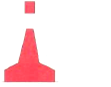

| 211. Каква е формата на топовите фигури (ако има такива) на десните латерални знаци на IALA?: |
|
Конична, с върха на горе Цилиндрична Сферична "X"-образна |
| документ регламентиращ правилния отговор: IALA Maritime Buoyage System NP 735 (2.7) |
| 212. В кои райони се прилагат латералните знаци на IALA?: |
|
Райони A, B и C Район А Район В Райони А и B |
| документ регламентиращ правилния отговор: IALA Maritime Buoyage System NP 735 (2.4) |
| 213. Плавате в район А, виждате червен цилиндричен буй. Какво означава?: |
|
Района е за отдих и развлечения Мини на Запад от мен Лява страна на основната посока за движение Основния път е на надясно |
| документ регламентиращ правилния отговор: IALA Maritime Buoyage System NP 735 Diagram 3 |
| 214. Плавате в район А, виждате червен стълбовиден буй. Какво означава?:  |
|
Мини на Запад от мен Лява страна на основната посока за движение Основния път е на наляво Район за военни учения |
| документ регламентиращ правилния отговор: IALA Maritime Buoyage System NP 735 Diagram 3 |
| 215. Плавате в район А, виждате червена веха Какво означава?: |
|
Мини на Запад от мен Район за военни учения Основния път е на на дясно Лява страна на основната посока за движение |
| документ регламентиращ правилния отговор: IALA Maritime Buoyage System NP 735 Diagram 3 |
| 216. Плавате в район А, виждате зелен коничен буй. Какво означава?: |
|
Място, където преминават подводни кабели и тръбопроводи Мини на Запад от мен Дясна страна на основната посока за движение Основния път е на на ляво |
| документ регламентиращ правилния отговор: IALA Maritime Buoyage System NP 735 Diagram 3 |
| 217. Плавате в район А, виждате зелен стълбовиден буй. Какво означава?: |
|
Границите на подводни кариери Дясна страна на основната посока за движение Мини на Север от мен Основния път е на дясно |
| документ регламентиращ правилния отговор: IALA Maritime Buoyage System NP 735 Diagram 3 |
| 218. Плавате в район А, виждате зелена веха. Какво означава?: |
|
Дясна страна на основната посока за движение Мини на Север от мен Знак, поставен в Системата за разделно движение Основния път е на дясно |
| документ регламентиращ правилния отговор: IALA Maritime Buoyage System NP 735 Diagram 3 |
| 219. Плавате в район А, виждате веха. Какво означава?: |
|
Дясна страна на основната посока за движение Основния път е на дясно Знак, поставен в Системата за разделно движение Мини на Изток от мен |
| документ регламентиращ правилния отговор: IALA Maritime Buoyage System NP 735 Diagram 3 |
| 220. Плавате в район А, виждате коничен буй. Какво означава?: |
|
Основния път е на ляво Границите на подводни кариери Мини на Север от мен Лява страна на основната посока за движение |
| документ регламентиращ правилния отговор: IALA Maritime Buoyage System NP 735 Diagram 3 |